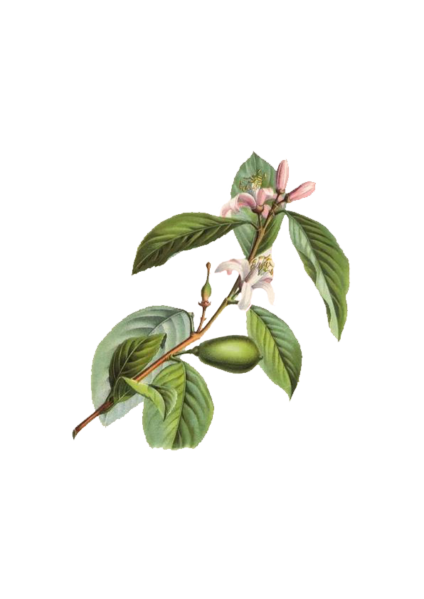
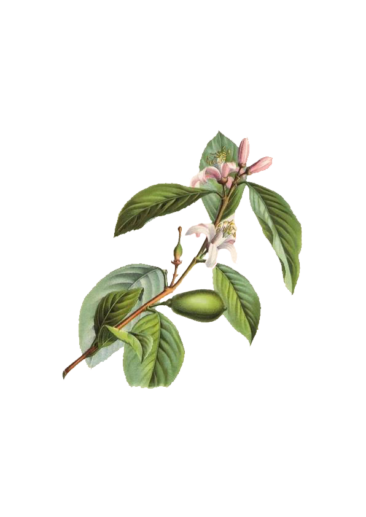

เครื่องดนตรี
ทรงเล่น


 

Trumpet
พระองค์สนพระทัยแตรตั้งแต่ก่อนเริ่ม เรียนแซกโซโฟนได้เสด็จพระราชดําเนิน ไปที่ภูเขา ได้ทอดพระเนตรวงดนตรีที่ เขาเล่นที่โรงแรมก็โปรด และมีพระราชประสงค์จะทรงแตรแต่สมเด็จย่าไม่ทรง เห็นด้วยเพราะการเป่าแตรต้องใช้กาลัง มากอาจเป็นอันตรายแก่สุขภาพได้จึง ทรงผ่อนผันให้เล่นแซกโซโฟนแทน ต่อ มาพระองค์จึงไปเช่าแตรมาเล่นครั้งแรก ที่เช่ามาเป็นแตรคอร์เนตอีกหลายปีจึง ทรงซื้อแตรทรัมเปตเครื่องแรกเองเป็น แตรยี่ห้อ เชสเมอร์” ของฝรั่งเศส แต่ ภายหลังเครื่องนี้พระราชทานองสุนทรา ภรณ์ไป ต่อมาจึงซื้อใหม่ยี่ห้อเซลเมอร์ เหมือนกัน ครูเวย์เบรชท์ที่เป็นครูสอน ดนตรีบอกว่าแตรดีที่สุดคือยี่ห้อกูร์ตัว แต่ไม่ได้ทรงซื้อเพิ่งซื้อเมื่อปีพ.ศ. 2529 นี่เอง
Saxophone
พระองค์สนพระทัยแตรตั้งแต่ก่อนเริ่ม เรียนแซกโซโฟนได้เสด็จพระะราชดําเนิน ไปที่ภูเขาได้ทอดพระเนตรวงดนตรีที่เขา เล่นที่โรงแรมก็โปรดและมีพระราช ประสงค์จะทรงแตรแต่สมเด็จย่าไม่ทรง เห็นด้วยเพราะการเป่าแตรต้องใช้กําลัง มากอาจเป็นอันตรายแก่สุขภาพได้จึง กรงผ่อนผันให้เล่นแซกโซโฟนแทน ต่อ มาพระองค์จึงไปเช่าแตรมาเล่นครั้งแรก ที่เช่ามาเป็นแตรคอร์นอีกหลายปีจึง ทรงซื้อแตรทรัมเปตเครื่องแรกเองเป็น แตรยี่ห้อ เชลเมอร์" ของฝรั่งเศส แต่ ภายหลังเครื่องนี้พระราชทานวงสุนทรา กรณ์ไป ต่อมาจึงซื้อใหม่ยี่ห้อเซลเมอร์ เหมือนกัน ครูเวย์เบรชท์ที่เป็นครูสอน ดนตรีบอกว่าแตรดีที่สุดคือยี่ห้อกูร์ตัว แต่ไม่ได้ทรงซื้อเพิ่งซื้อเมื่อปีพ.ศ.2529 นี่เอง
Piano
พระองค์ได้เริ่มทรงเปียโนเมื่อเสด็จ เถลิงถวัลยราชสมบัติแล้วเพื่อใช้ในการพระราชนิพนธ์เพลงและเพื่อร่วมกับวง ดนตรีเป็นการส่วนพระองค์สําหรับเปีย โบนั้นพระองค์ไม่เคยทรงเรียนจริงวังจาก ใคร แต่ทรงเล่นเอาเองดูโน้ต และทรง เรียนรู้ประสานเสียงเอง 'Carl Hardt Stutgart เป็นเปียโนตัวแรกที่ในHลวง รัชกาลที่9กรงเล่นตั้งแต่สมัยที่ประทับ อยน้องโชานสวัดเปอร์แสบ ซึ่งเป็น เปียโนที่สมเด็จพระศรีนครินทราบรมราช ชนนีทรงเช่าให้พระราชธิดาและพระ ราชโอรสทั้ง 3 พระองค์เมื่อครั้งทรง พระเยาว์ซึ่งเป็นตัวเดียวกับที่เรามักจะ เห็นในพระบรมฉายาลักษณ์ที่พระองค์ ทรงเปียโน โดยที่มีแมวทรงเลี้ยงชื่อ "โด้" นั่งเฝ้าอยู่ไม่ส่ง
Accordian
ในหลวงรัชกาลที่ 9 ทรงเริ่มเล่นดนตรีตั้งแต่พระชนมายุ 13 พรรษาขณะที่ประทับอยู่ที่ประเทศสวิตเซอร์ แลนด์โดยเครื่องดนตรีแรกที่ทรงเรียนก็คือ แอคคอร์ เดียน หรือหีบเพลง แต่พระองค์ไม่ทรงติดต่อมาจึงได้ เลิกเล่นไป
Clarinet
สําหรับคลาริเบตนับครั้งแรกทรงเอา ของพระบาทสมเด็จพระเจ้าอยู่หัวอานันทมหิดลมาทรงเป่าและครูเวย์บรูชท์ก็ได้ ให้คําแนะบ้าอยู่สองครั้งสามครั้ง หลัง จากนั้นพระองค์ก็ทรงเล่นเอง ไม่ได้ไป เรียนที่ไหนอีก คาริเนตที่ทรงใช้ตัวแรก ยี่ห้อ ‘เลอบลองค์’
Guitar
เราอาจจะไม่ค่อยได้เห็นพระองค์ทรง กีตาร์บ่อยนัก แต่เป็นอีกเครื่องดนตรี ที่พระองค์ทรงเล่นได้ไพเราะเป็นอย่าง มาก พระองค์ทรงที่ตาร์ครั้งแรกเมื่อ พระชนมายุราว16 พรรษาได้ยืมมาจาก เพื่อนรุ่นพี่ที่โรงเรียนภายหลังเอาไปคืน แต่เขาเห็นว่าพระองค์สนพระทัยในการ์ จึงมอบกีตาร์ให้เลยและที่สําคัญที่ตาร์ ถือเป็นเครื่องดนตรีชิ้นสําคัญที่ พระองค์ทรงเพื่อใช้ในการพระราชนิพนธ์เพลงเพราะๆ ที่พวกเราได้ยินได้ฟังกันอยู่ทุกวันนี้